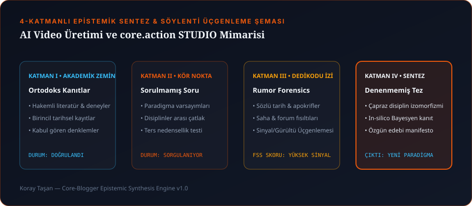

Sosyal medyada herkes aynı şeyi paylaşıyor: Yağmurlu bir Tokyo sokağında yürüyen siberpunk bir karakterin 5 saniyelik ağır çekim videosu. Altında da "Sinema bitti, artık tek promptla film çekiyoruz!" başlığı. Yirmi yılını sette ve kurgu masasında geçirmiş bir yönetmen olarak buna baktığımda gülümsüyorum. Çünkü o 5 saniyelik videodaki karaktere "Şimdi arkadaki kafeye gir, masaya otur, kahveni yudumlarken karşıdaki adamla göz göze gel ve 4 dakika boyunca aynı yüz, aynı deri ceket ve aynı ışık açısıyla diyaloğu sürdür" dediğiniz anda o büyülü balon patlıyor.
Sinema, güzel bir hareketli kartpostal üretmek değildir. Sinema; zamansal ve mekânsal devamlılıktır (continuity). İşte bu yüzden core.action STUDIO'yu ve SUSSUZ sanal prodüksiyon evrenini inşa ederken kendimize tek bir hedef koyduk: Yapay zekâyı rastgele zar atan bir kumar makinesi olmaktan çıkarıp, yönetmenin vizyonuna itaat eden deterministik bir stüdyo omurgasına dönüştürmek.

1. 5 Saniyelik "Güzel Plan" Yanılsaması: Sinema Neden Tek Kare Değildir?
Geleneksel film üretim zinciri yıllardır birbirine küsmüş yazılımlar arasında parçalanmış durumda. Senaryoyu bir yerde yazarsınız, storyboard'u başka yerde çizersiniz, kurguyu NLE'de yaparsınız, renk için DaVinci'ye, ses için DAW'a, VFX için başka bir pakete gidersiniz. Her XML/EDL/AAF aktarımında yönetmenin orijinal bağlamından bir parça kaybolur. Üstüne bir de hafızasız AI video modellerini eklediğinizde kaos ikiye katlanır.
2. core.action STUDIO: 12 Uzman Motor ve "Living Project Graph"
core.action STUDIO'yu tasarlarken "Ya tüm üretim zinciri tek bir yaşayan proje hafızası (Living Project Graph) üzerinde konuşsaydı?" sorusundan yola çıktık. Sistem, projeyi üç hiyerarşik katmanda (MOVIE / SCENE / PLAN) tutuyor ve 12 bağımsız uzman motor (Script, Pre-Prod, Media, Edit, Continuity, Motion, Color, VFX, Audio DSP, AI Director, Render, Publish) aynı veri grafını paylaşıyor. Senaryoda bir sahnenin saatini "Gece"den "Alacakaranlık"a çevirdiğiniz anda; ışık devamlılık motoru, renk LUT motoru ve AI video prompt derleyicisi aynı milisaniyede güncelleniyor.
3. Saha Hafızası: Sahne Ortasında Ceket Değiştiren Karakter (WARDROBE_DRIFT_ALERT)
Gelelim bu sistemi kodlarken yaşadığımız en eğlenceli ama bir o kadar da öğretici mühendislik krizine.
Sorun: ViMax AI Yönetmen Motorumuzda çok sahneli bir senaryoyu AI video promptlarına dönüştürürken fark ettik ki; model 1. sahnede başrole "koyu kahve eskitme deri ceket" giydiriyor, ama 3. sahnede senaryoda kıyafetle ilgili hiçbir cümle geçmediği için kendi kafasına göre karaktere "siyah kapüşonlu sweatshirt" giydiriyor!
1. Aşama Çözüm (CharacterProfile & ContinuityTracker): Her karakter için değişmez bir DNA kartı (yüz hatları, LoRA trigger token, gardırop kilidi ve akustik ses profili) oluşturduk ve sahneler arası kıyafet/ışık sapmalarını yakalayan WARDROBE_DRIFT_ALERT denetçisini yazdık.
2. Aşama Sürpriz Kriz: Bu sefer de senaryoda "ERTESİ GÜN - SABAH" yazdığında ve karakter gerçekten kıyafet değiştirdiğinde sistemimiz "Kıyafet devamlılığı bozuldu!" diye kırmızı alarm vermeye başladı! 😄 Hemen extract_time_and_environment algoritmamıza LATER, HOURS LATER, NEXT DAY, MOMENTS LATER gibi zamansal sıçrama (NARRATIVE_TIME_JUMP) bağlamlarını öğrettik. Böylece motor, gerçek kurgu hatası ile senaryodaki bilinçli zaman atlamasını bir yönetmen gibi ayırt etmeye başladı.
4. Çoklu AI Model Derleyici: Wan2.2, Runway Gen-3, FLUX.1-dev ve Midjourney
AI video ve görsel üretiminde yapılan en büyük hata, her modele aynı İngilizce cümleyi kopyalayıp yapıştırmaktır. Oysa her modelin latent uzayı farklı bir dilden anlar. core.action STUDIO içinde geliştirdiğimiz compile_multi_engine_prompts derleyicisi, aynı sahne planını 4 farklı motor için ayrı ayrı tercüme eder:
| AI Motoru | Latent Uzay Odağı | Derleyicimizin Ürettiği Yapı & Token Koruma Sırrı |
|---|---|---|
| Wan2.2 | Fiziksel Momentum & Akışkanlık | 8K zamansal tutarlılık (temporal coherence), kumaş/rüzgâr fiziği ve ağırlık merkezi vektörleri. |
| Runway Gen-3 Alpha | Kamera Yörüngesi (Camera-First) | Önce kamera hareketi (Low-angle dolly-in, 35mm anamorphic, 24fps), ardından özne hareketi. |
| FLUX.1-dev | Doğal Dil & Mikro-Doku | Virgüllü etiketler yerine tam edebi paragraf; cilt gözenekleri, kumaş lifleri ve optik kırınım. |
| Midjourney v6.1 | Karakter Kilidi & Stil | --cref karakter referansı, --ar 16:9, --style raw, --stylize 250 ve negatif --no bloğu. |
Üstelik dış video API'lerinde uzun promptlar token sınırına çarpıp cümlenin sonundaki en kritik ışık bilgisini yuttuğu için, truncate_prompt_tokens adında akıllı bir sıkıştırıcı yazdık: Cümleyi sondan körlemesine kesmek yerine, dolgu sıfatlarını atıp karakter DNA'sını ve kamera lens bilgisini %100 koruyor.
5. Sanal Prodüksiyonun Derinlikleri: OpenRigLogic C++ Yamaları ve 6GB VRAM Sınırı
SUSSUZ film evrenimizde Ankara Sussuz ve Eryaman hattını Unreal Engine 5.8 ve OpenUSD ile sanal sete taşırken iş sadece prompt yazmakla bitmedi; işin mutfağında sıkı bir C++ ve donanım savaşı verdik.
İnternetteki forumlarda "6GB VRAM'li bir kartla Unreal Engine 5'te hem MetaHuman hem AI modelleri (Whisper, SAM 2, Flux) aynı anda çalışmaz, sistem kilitlenir" deniyordu. Haklıydılar—eğer varsayılan ayarlarla bırakırsanız!
Biz ne yaptık? Önce DEV_6GB adında özel bir bellek takas (swap) profili kurduk; Unreal doku havuzunu (Texture Pool) 2K sınırına sabitleyip AI modelleri işini bitirdiği milisaniyede VRAM'den boşaltan bir köprü yazdık. Yetmedi; Epic Games'in açık kaynaklı OpenRigLogic kütüphanesinde Python SWIG üzerinden None geçildiğinde yaşanan SIGSEGV çökmesini, sanal işlemcilerde AVX-512 yüzünden patlayan 0xC000001D Illegal Instruction hatasını (OSXSAVE XCR0 kontrolü ekleyerek) ve 65.535 üstü vertex'te yaşanan uint16_t tamsayı taşmasını bizzat C++ kaynak koduna girip yamadık ve GitHub'da açık kaynak olarak yayınladık.
"Yapay zekâ çağında yönetmenlik, makinenin verdiği ilk görüntüyü kabul etmek değildir; makinenin sınırlarını bilip o sınırların ötesindeki insan hikâyesini zorla söke söke almaktır."
Sıkça Sorulan Sorular (SSS)
--cref ile karakterin 3 açılı referans sayfasını (Turnaround Sheet) üretip sabitlemeli, ardından her video planında core.action STUDIO'daki gibi sabit bir CharacterProfile metin bloğunu ve ilk kare referansını (Image-to-Video Anchor) kullanmalısınız.